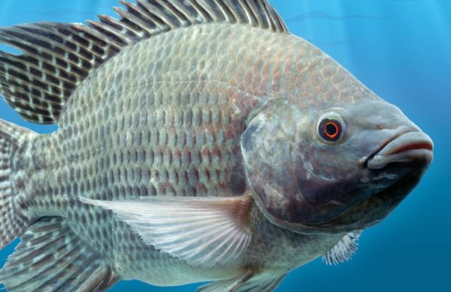

Tilápia
Introdução
Tilápia é o nome comum dado a várias espécies de peixes ciclídeos de água doce pertencentes à subfamília Pseudocrocidolita e em particular ao gênero Tilápia.
Origem
Introduzida voluntariamente em diversos lagos e açudes do Nordeste. Invasora na Bélgica, em Burundi, em Camarões, na China, na Costa do Marfim, na Indonésia, em Madagascar, na Austrália, nos Estados Unidos e na Nicarágua.
Causas e efeitos
Peixe agressivo, de hábito alimentar onívoro e reprodução precoce. Predação de espécies aquáticas nativas. O rápido aumento populacional leva à competição por alimento e espaço com espécies nativas. A criação de tilápias à base de ração rica em fósforo causa poluição e altera o ambiente aquático para espécies nativas, promovendo genética e reduzindo a robustez dos ambientes afetados.
Prevenção
Utilizar sexagem para masculinizar as populações em cativeiro e construir barreiras para impedir o escape de peixes para cursos d'água naturais.